|
|
|
In this project, we implemented the initial parts of a ray tracing algorithm. In part 1, we implemented a ray generation algorithm to transform coordinates from the image space to the camera space and wrote functions to test whether a ray intersected with a triangle or a sphere in the scene. To speed up the rendering process, we implemented a bounding volume hierarchy structure to divide our scene and make the process of checking intersections quicker. We then implemented direct illumination in part 3 and indirect illumination in part 4 to extend our algorithm to global illumination. Lastly, in part 5, we implemented adaptive sampling in order to make rendering more efficient, concentrating our samples on parts of the scene that are more difficult to render than others.
Ray Generation:
To generate a ray, we wrote the function `generate_ray` in `camera.cpp` that takes in normalized images coordinates (x, y) in
world space, transforms them into coordinates in camera space, calculates the camera ray in camera space,
and transforms the camera ray back into world space. A photo detailing the calculation from the project spec
is shown below:

The coordinate (0, 0) and (1, 1) in the normalized image space map to (-tan(0.5 * hFov), -tan(0.5 * vFov), -1)
and (tan(0.5 * hFov), tan(0.5 * vFov), -1) in camera space, respectively. Hence, to map (x, y) to camera space,
we multiply x by 2 * tan(0.5 * hFov) to scale it then subtract tan(0.5 * hFov) to center it, giving us a final
equation of camera_x = x * 2 * tan(0.5 * hFov) - tan(0.5 * hFov). We do something similar to scale and center y,
giving us the equation camera_y = y 2 * tan(0.5 * vFov) - tan(0.5 * vFov).
Our vector in camera space goes from the camera's origin at (0, 0, 0) to our calculated (camera_x, camera_y, -1),
giving us a camera space vector (camera_x, camera_y, -1). We then multply it by the ray's camera-to-world rotation
matrix `c2w` to transform our vector into world space. Lastly, we normalize the vector and return a new ray comprised of
the original ray's origin transformed into world space and our calculated vector. Additionally, we update
our new ray's minimum and maximum t's to be nClip and fClip, respectively.
Scene Intersection:
To model scene intersection, we wrote the function `raytrace_pixel` in `pathtracer.cpp` that takes in unnormalized image space coordinates (x, y) representing a pixel ((x, y) is the lower left corner, (x+1, y+1) is the upper right corner) and uses a uniform Monte Carlo estimator to estimate the radiance at that pixel. To do this, we take the average radiance from `ns_aa` random rays. For every sample, we add a random term drawn from a uniform distribution from 0 to 1 to x and y, normalize x, y by dividing by the width w and height h, respectively, of our image. Then, we use `generate_ray` defined above to generate a ray from that point and calculate the radiance using the given `est_radiance_global_illumnation` function. All radiances from the `ns_aa` random samples are added together then averaged to obtain the integral of radiance over our pixel (x, y).
Triangle-Ray Intersection:
Our triangle intersection algorithm in the functions `has_intersection` and `intersect` in `triangle.cpp`
use the Moller Trumbore Algorithm from Lecture 9, slide 22 to determine if a ray intersects a triangle.
It involves several matrix calculations shown below:
where vectors o and d are saved in the Ray object r, and P0, P1, and P2 correspond with the given triangle's p1, p2, and p3 variables, respectively. Once we calculated t, b1, and b2, we ascertained that t was between min_t and max_t and that b1, b2, and 1 - b1 - b2 were all between 0 and 1.
Sphere-Ray Intersection:
Our sphere-ray intersection algorithm in the functions `has_intersection` and `intersect` in `sphere.cpp`
use the calculations introduced in Lecture 9, slide 23 to determine if a ray intersects with a sphere. It
involved several vector calculations shown below:
where vectors o and d are saved in the Ray object r, the center of the sphere is saved in the `o` variable, and the radius of the sphere is saved in the r variable. We ascertained that the delta term of sqrt(b^2 - 4ac) was nonnegative and that our t's were between min_t and max_t.

|

|
|
|
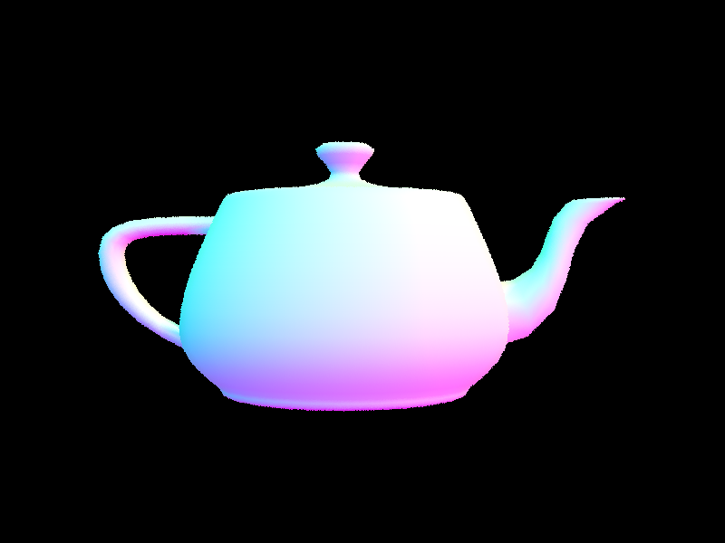
|
Our BVH construction algorithm uses the median centroid value as a heuristic for choosing the splitting point. To construct a BVH given start and end iterators of a vector of Primitive * and a max_leaf_size, we first iterated through all the primitives to obtain a the bounding box for those primitives, a separate bounding box for their centroids, and the total number of primitives. Recursion ends when the total number of primitives is smaller than or equal to the max_leaf_size, and we construct a leaf node with the given start and end pointers. Otherwise, we find the longest axis of the centroid bounding box and split the primitives by the median centroid along that axis into left and right vectors (this is done in place using std::sort). We recurse on the left and right vectors and set them to node->l and node->r, respectively.
|
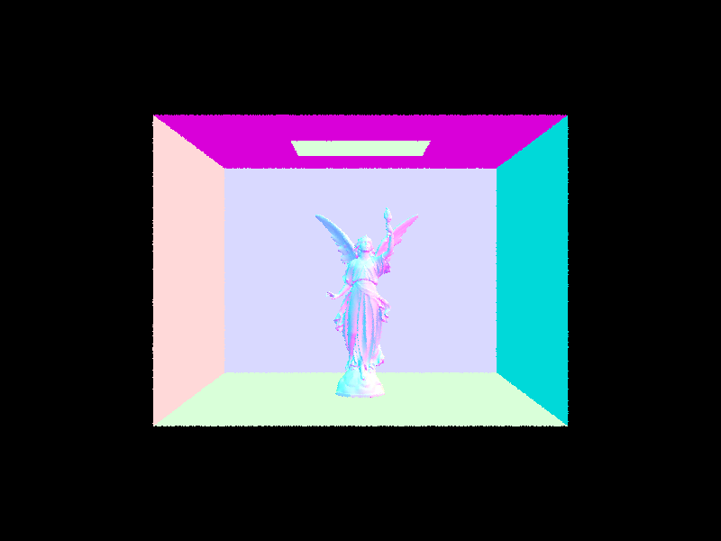
|
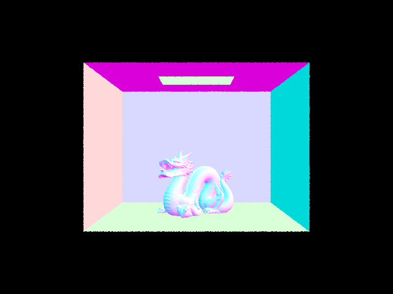
|
|
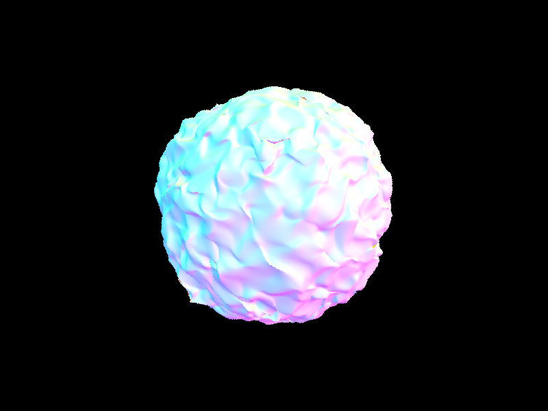
|
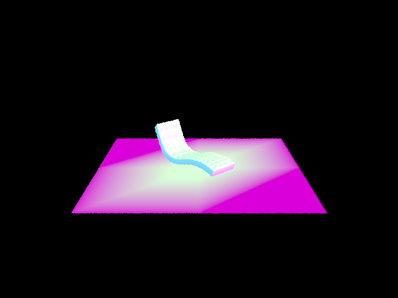
|
The rendering times for moderately complex geometries differ greatly with and without BVH acceleration. We tried rendering cow.dae, beetle.dae, and CBoil.dae using both methods. Without BVH acceleration took around 8, 11, and 12 seconds, respectively, per photo while using BVH acceleration took less than 0.04 seconds for each render. We can conclude that BVH acceleration drastically decreases the amount of time it takes to render an object. The results are shown below:
cow.dae:
without BVH acceleration (local M1 Macbook Air): 8.4985s
with BVH acceleration: 0.0260s
|
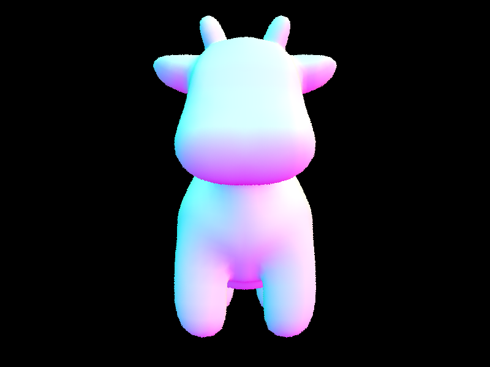
|
|
beetle.dae:
without BVH acceleration (local M1 Macbook Air): 11.1062s
with BVH acceleration: 0.0322s
|
|
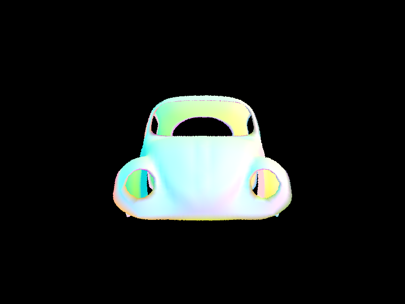
|
CBcoil.dae:
without BVH acceleration (local M1 Macbook Air): 12.7793s
with BVH acceleration: 0.0371s
|
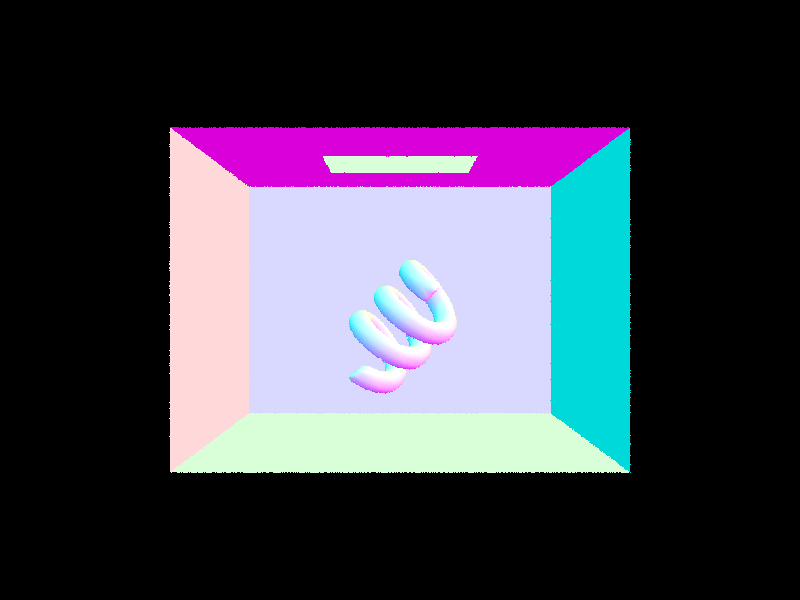
|
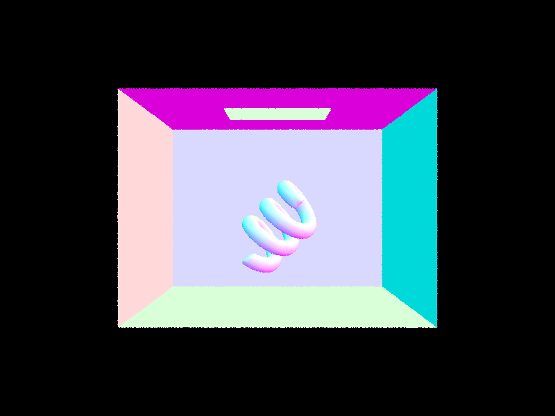
|
Direct Lighting with Uniform Hemisphere Sampling (Task 3)
This method traces inverse rays by calculating the amount of light that arrived at the ray's intersection point to
something in the scene and using that to determine how much light is reflected back towards the camera at that intersection
point. To do this, we wrote the function `estimate_direct_lighting_hemisphere` that takes in a Ray `r` and an Intersecton object
`isect`. To estimate the amount of light that arrived at `isect` by approximating the reflection equation through a
Monte Carlo estimator from Lecture 13, slide 23 shown below:
where hit point p is given by the variable `hit_p` and wr is given by `w_out`. To average the the calculations, we aggregate values through
a `L_out` variable and a for loop. In each iteration, we sample a wi vector (object space) uniformly at random from the `hit_p`'s hemisphere, giving us a pdf of
1/(2pi). After converting wi to world space, we create a ray originating at hit_p in the direction of wi (world space),
using the constant `EPS_F` to avoid numerical precision errors. We test to see that this new ray intersects with our
BVH, and if it does, we use the reflectance equation above with fr calculated using `isect`'s bsdf->f function, Li calculated with
the sampled intersection's bdsf emission, and cos_theta_j as wi.z (object coordinates), the cosine between wi (object) and
the normal Vector3D(0, 0, 1). We multiply those values together, divide by the pdf, and add it to L_out. After the for loop finishes,
we average the emission values by dividing L_out by `num_samples` and return the vector.
Direct Lighting by Importance Sampling Lights (Task 4)
To remedy the noisiness in the previous sampling method, we implemented `estimate_direct_lighting_importance` that samples lights
directly. Similarly, it takes in a Ray `r` and an Intersecton object `isect`, and p is given by the variable `hit_p` and wr is
given by `w_out`. After initializing the L_out vector, we only iterate through the lights present in our scene. For each light,
if it is a point light source, we only need to sample it once. Otherwise, we use the for loop technique to aggregate and
average L for `ns_area_light` samples. To sample, the light's `sample_L` function stores the sampled wi, distance to light,
and pdf given the hit_p. Since wi is in world coordinates, we also define a variable wi_object to represent wi in object
coordinates. We can also determine `cos_thetai` from wi_object.z, the cosine between wi (object) and the normal
Vector3D(0, 0, 1). If cos_thetai is less than 0, we know tha tthe light is behind the surface at the hit point and can
ignore this sample. Otherwise, we generate a ray originating at `hit_p` in the direction of wi (world coordinates) and set it's
maximum time to the sampled distance to light, using `EPS_F` to avoid precision errors for the ray's `min_t` and `max_t`
variables. This is a shadow ray, so no intersection between it and the BVH indicates that there is no surface blocking the light,
allowing us increment L_out by fr (calculated with `isect`'s bsdf->f) * the sampled L * `cos_thetai` / the sampled pdf averaged
across the samples.
| Uniform Hemisphere Sampling | Light Sampling |
|---|---|
|
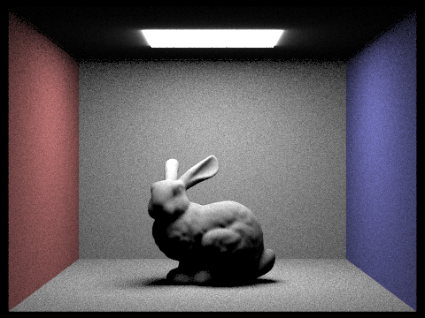
|
|
|
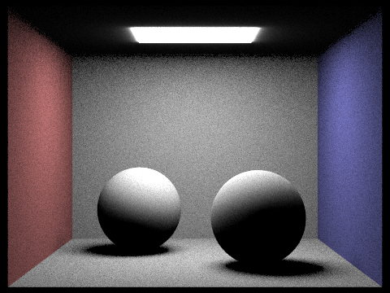
|
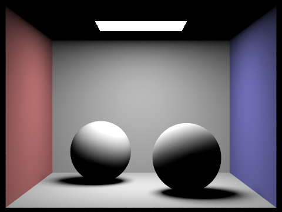
|
|
|
|
|
|
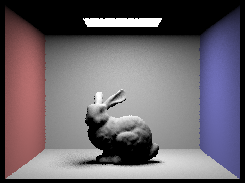
|
Noise levels are high when the number of light rays are low, and they get progressively less noisy as the number of light rays increases. One place where this effect is more obvious is the bunny's shadow (specifically the left shadow).
Uniform hemisphere sampling results in more noisy renders than light sampling. As you can see in the side-by-side photos of the bunny and spheres in the containment box, the walls rendered using uniform hemisphere sampling have noise while the walls rendered from light sampling are smooth. The border around the light in the from the uniform hemisphere sampling is fuzzy while the border around the light for light sampling is clean. We can also see that shadows formed by the bunny and spheres are much clearer when using light sampling than uniform hemisphere sampling.
To add indirect lighting for full global illumination, we implemented the `at_least_one_bounce_radiance` function that uses Russian Roulette to probabilistically terminate recursion. Our code follows the structure of the path tracing psueocode from Lecture 13 slide 98 shown below:
Given Ray `r`, Intersection `isect`, hit point `hit_p` in world space, and wr as `w_out`, we initialize our result vector
L_out of zeros and add the result of `one_bounce_radiance`. We then sample a BRDF using `isect`'s `bsdf->sample_f` function,
which takes in `w_out` and saves a sampled wi (in object coordinates) and sampled pdf in the given pointers. We generate a ray
`sampled_ray` using the sampled wi (in world coordinates) with `hit_p` as its origin, using `EPS_F` to avoid precision errors.
We also set `sample_ray`'s `depth` variable to be one less than `r`'s depth variable, as our sampled ray is one recursive depth
lower than our given ray `r`. We test to see if `sample_ray` intersects with the given BVH, and if it does, we do one of the following
depending on the ray's depth and a coin flip probability. If `r`'s depth is equal to `max_ray_depth`, and both are greater than 1,
indirect illumination is "turned on", and we trace at least one indirect bounce. Hence, we recursively call `at_least_one_bounce_radiance`
using the sampled ray and intersection. We multiply that by the sampled BRDF given by `isect`'s `bsdf->sample_f` above and
the costheta, which is determined by wi_object.z, the cosine between wi (object) and the normal Vector3D(0, 0, 1). We divide that product
by the sampled pdf (no need to divide by cpdf, as there is no sampling in this case, so cpdf is 1) and add the resulting value
to `L_out`. In the second case when `r`'s depth is not equal to `max_ray_depth`, we recuse if (1) `r.depth` is greater than one
and (2) our coin flip that returns `true` with a probability between 0.3 and 0.4 (we set our cpdf to 0.35) returns true.
We then follow a similar calculation described in the case above except we divide the product by cpdf, as this involved random chance.
When the function finishes executing, we return `L_out`.
We also modify the `est_radiance_global_illumination` according to the specifications on Ed. Setting the `max_ray_depth` to 0 returns only zero bounce
radiance, setting it to 1 returns only one bounce radiance, and setting it to a value greater than 1 will always do at least
one indirect bounce even if Russian Roulette would have led to ray termination. After that bounce, we terminate on every bounce
with a probability `cpdf` or until we reach `max_ray_depth`.
|
|
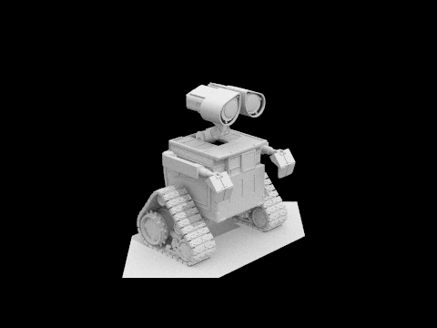
|
|
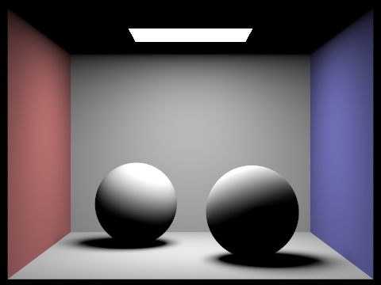
|

|
These were generated with the command `-t 8 -s 1024 -l 16 -m 5 -r 480 360 -f only_(in)direct_spheres.png ../dae/sky/CBspheres_lambertian.dae`
with modifications to `at_least_one_bounce_radiance` in the code.
The scene generated with only direct illumnation has a very clear
borders for the light source at the top, but the ceiling around the rectangular light is all dark. The walls are a brightest at
the middle, and the red and blue colors of the wall are quite saturated. For the spheres, the light
shining at the top of the spheres is very bright, as that is where the light comes from, but the shading gets progressively darker
as we move down the spheres. The spheres' shadows are also very prominent. The scene generated with only indirect illumination is the opposite.
The light fixture at the top appears all black, but the ceiling around the rectangular light is well-lit. The color of the walls
are less saturated and are illuminated more around the edges as opposed to the center. The spheres appear lit from the bottom,
but the contrast between the top and bottom of the spheres are not as prominent as the direct illumination render. Shadows
are much less visible and appear smaller in diameter.
|
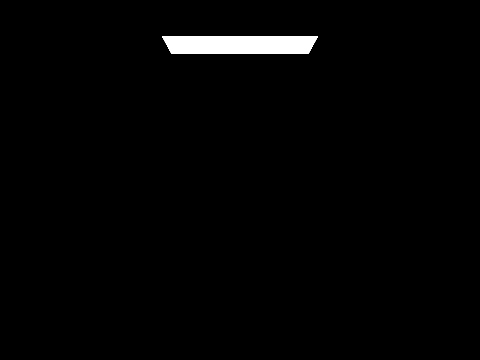
|
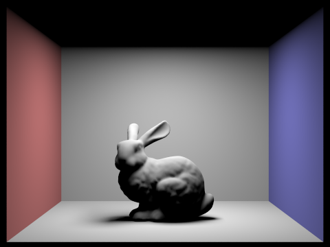
|
|
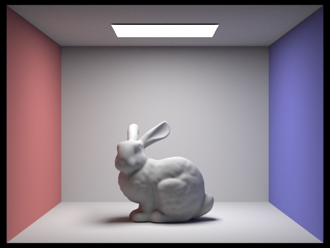
|
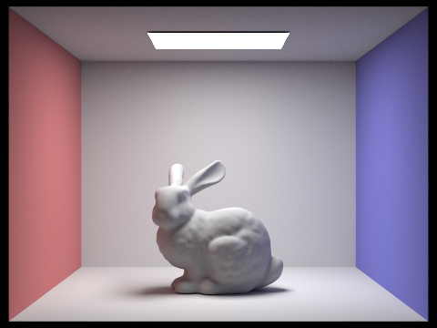
|
|
|
These were generated with the command `-t 8 -s 1024 -l 32 -m {max_ray_depth} -f bunny_max_{max_ray_depth}.png -r 480 360 ../dae/sky/CBbunny.dae`
The image generated with `max_ray_depth = 0` uses zero bounce radiance, so only the rectangular light fixture at the top is visible.
The image generated with `max_ray_depth = 1` uses one bounce radiance, so the scene is lit with darker shadows towards the bottom
of the bunny, and the light fixture is completely dark. Images for `max_ray_depth` set to 2, 3, and 100 are relatively similar.
These images were all generated using full global illumination that included direct and indirect light, so they are the most
photorealistic. Setting `max_ray_depth` equal to 100 results in a slightly brighter photo than setting it 3, which results in a slightly
brighter photo than 2. The reason why differences are not very drastic could be because russian roulette terminates most rays
before they reach a max_ray_depth of 100.
|
|
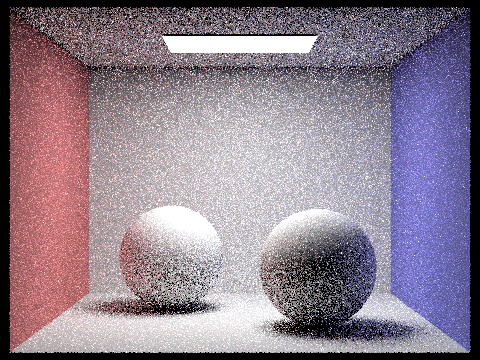
|
|
|
|
|
|
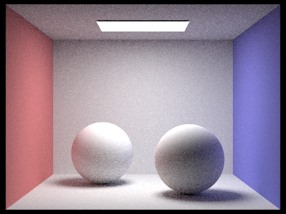
|
|
|
These images were generated with the following command: `-t 8 -s {sample_rate} -l 4 -m 5 -r 480 360 -f spheres_s(sample_rate).png ../dae/sky/CBspheres_lambertian.dae`
Exponentially increasing the number of samples per pixel decreases the noisiness of the renders.
Adaptive sampling works by controlling the number of times we sample at each pixel, placing a higher number of samples on parts of the image that are more detailed/difficult to render. To achieve this, we implemented the following algorithm in our code:
|
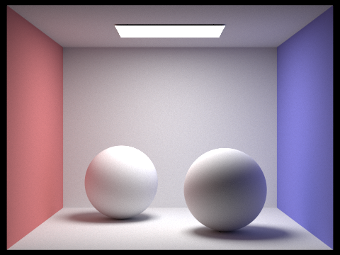
|
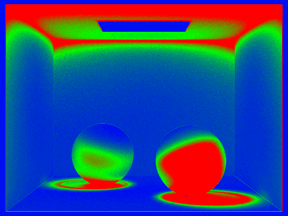
|
|
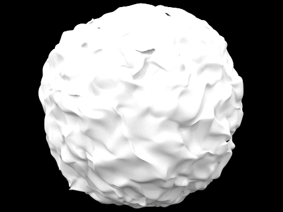
|
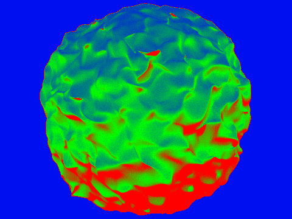
|